Histoire et éducation à la citoyenneté
06 / 12 réalité sociales
L'essor urbain et commercial
XIe au XIVe siècle · La renaissance des villes
- bourg
- bourgeoisie
- capital
- charte
- droit
- Grand commerce
- hiérarchie sociale
- institution
- urbanisation

Mise en contexte
Avec l'essor du commerce et de l'urbanisation au Moyen Âge, la bourgeoisie se développe. L'émergence de ce groupe social, qui s'impose progressivement dans la hiérarchie sociale, est un des facteurs conduisant à la fin du Moyen Âge. Elle annonce également la remise en cause d'un ordre social fondé sur la tradition.
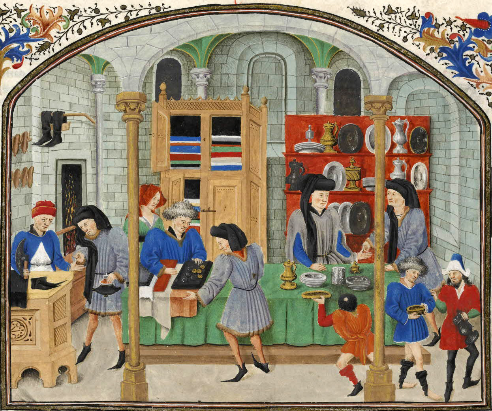
Source
Nicole Oresme, translation of Aristotle's Ethics, Politics, and Economics , Rouen (France), Bibliothèque Municipale, Ms. 927, fol. 145, Medieval market, Wikimedia Commons. Licence : Domaine public.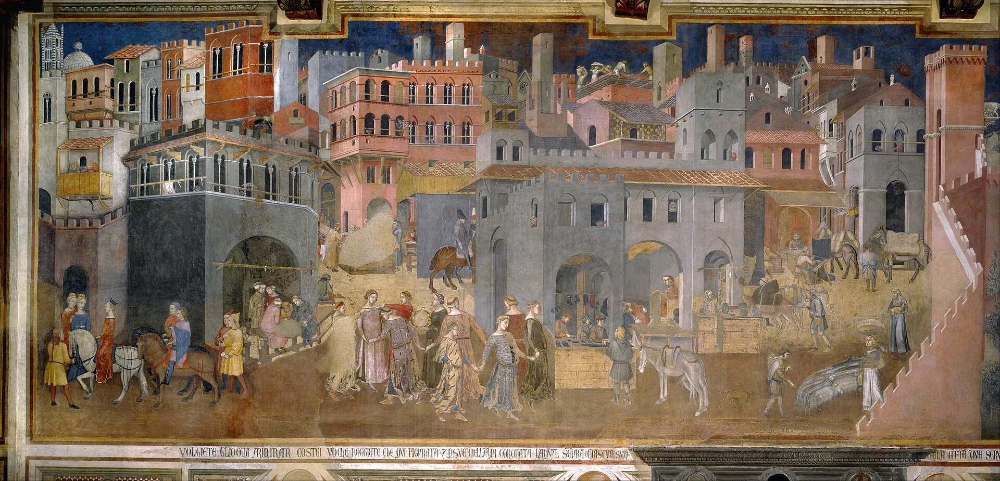
Source
Ambrogio Lorenzetti, Ambrogio Lorenzetti - Effects of Good Government in the city - Google Art Project, Wikimedia Commons. Licence : Domaine public.Concepts à l'étude
- Bourg : une petite ville, souvent née autour d'un château ou d'un monastère, où se tient le marché des villages environnants.
- Bourgeoisie : le groupe social des habitants des bourgs, marchands, banquiers et maîtres artisans, qui s'enrichit grâce au commerce.
- Capital : l'argent et les biens accumulés qu'on peut investir pour faire du commerce et s'enrichir davantage.
- Charte : une entente écrite, négociée avec le seigneur, qui accorde des droits et des libertés aux habitants d'un bourg.
- Droit : ce qu'une personne est autorisée à faire ou à exiger, comme tenir un marché ou élire des dirigeants.
- Grand commerce : les échanges de marchandises à grande distance, entre l'Europe, l'Asie et l'Afrique, par les foires, les routes et les mers.
- Hiérarchie sociale : le classement des groupes d'une société, du plus puissant au plus démuni.
- Institution : une organisation durable qui encadre la vie en société, comme une corporation ou une administration de bourg.
- Urbanisation : la croissance des villes et l'augmentation de la part de la population qui y vit.
Situer dans le temps et dans l'espace
Des royaumes stables
Alors que le Haut Moyen Âge (environ 500 à 1000) fut relativement sanglant et empreint de nombreux conflits, le Moyen Âge central (environ 1000 à 1300) est plus paisible. En effet, les paysans améliorent les techniques agricoles, les royaumes européens se stabilisent, le commerce se développe dans les bourgs et un nouvel ordre social émerge.
Les villes médiévales que sont Bruges, Hambourg, Londres, Venise et Florence sont dorénavant au coeur du développement du Grand commerce. En effet, des foires médiévales s'y organisent tout au long des 11e, 12e, 13e et 14e siècles. Leur situation stratégique, à proximité de la mer Méditerranée, de la mer du Nord, de la mer Noire ou d'un passage maritime tel que la Manche, incite les marchands à s'y réunir. Notons finalement que le harnais et les fers à cheval favorisent le déplacement en charrette, ce qui facilite le transport par les voies terrestres.
Les routes du Grand commerce
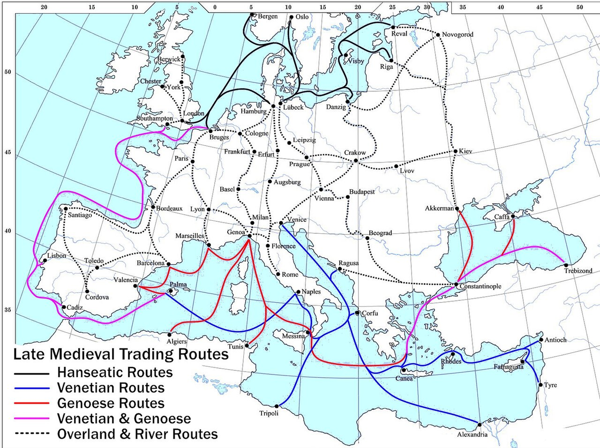
Source
Lampman, Late Medieval Trade Routes, Wikimedia Commons. Licence : Domaine public.La carte montre les grandes routes commerciales de la fin du Moyen Âge. Pour la lire :
- en noir, les routes de la Hanse relient les ports de la mer du Nord et de la mer Baltique, dont Bruges, Londres et Hambourg;
- en bleu et en rouge, les routes maritimes de Venise et de Gênes sillonnent la Méditerranée et rejoignent la mer Noire;
- en pointillé, les routes terrestres et les fleuves traversent le continent : c'est à leur croisement, comme en Champagne, que se tiennent les grandes foires.
La ligne du temps
Le développement urbain et commercial
Le schéma suivant donne la vue d'ensemble : deux causes mènent à l'essor des bourgs et du commerce, qui entraîne à son tour trois grandes conséquences. Les sections qui suivent expliquent chacun de ces éléments.
Les causes
Deux grandes causes expliquent l'essor des bourgs : la Paix de Dieu et l'amélioration des techniques agricoles.
La Paix de Dieu
La Paix de Dieu est un mouvement lancé par l'Église qui, vers l'an 1000, encourage seigneurs et chevaliers à observer des moments de paix et des actions non violentes envers les paysans. Elle vise trois grands objectifs :
Protéger les biens de l'Église Les possessions ecclésiastiques, dont le nombre s'accroît grâce à des donateurs nombreux soucieux d'assurer le salut de leur âme après la mort.
Protéger les plus vulnérables Ceux qui ne peuvent pas se défendre : les religieux (qui n'ont pas le droit de tuer), les paysans (qui ne savent pas manier les armes) et les pèlerins (qui réalisent des voyages spirituels).
Protéger les ressources Il est interdit de s'attaquer au bétail, aux moulins et aux animaux de labour, sous peine d'excommunication (l'exclusion de l'Église).
L'amélioration des techniques agricoles
L'agriculture se développe grandement au Moyen Âge, notamment en raison de l'amélioration des moulins à eau et à vent, de l'assolement (rotation des cultures) et du perfectionnement des outils agricoles. Le développement de la métallurgie y est pour beaucoup dans ce dernier.
Le moulin à vent. Le moulin sert à moudre le grain. Tout le blé récolté dans un domaine ou une seigneurie doit y être amené et moulu contre le droit de banalité, reversé au maître de l'eau (dans le cas d'un moulin à eau), au seigneur et au meunier.
L'assolement triennal. L'assolement triennal correspond à la division de la terre cultivée en trois soles : une sole de céréale d'hiver (majoritairement du blé), une sole de céréale de printemps (orge, avoine) ou de légumineuse et une sole de jachère. (Source : Wikipédia)
Le collier d'épaule. Le collier d'épaule est un harnais rigide qui fait reposer l'effort de traction sur les épaules du cheval plutôt que sur son cou. L'animal ne s'étouffe plus en tirant : il peut déplacer des charges beaucoup plus lourdes, ce qui rend le labour et le transport bien plus efficaces.
La charrue. La charrue est un instrument aratoire utilisé en agriculture pour labourer les champs. Elle s'est plus largement répandue en Europe lors de la révolution agricole du Moyen Âge, où son utilisation, conjointement à celle du fumier, a permis d'augmenter la productivité agricole. (Source : Wikipédia)
Les conséquences
L'essor agricole entraîne trois grandes conséquences : l'apparition de la bourgeoisie marchande, les migrations urbaines et la mise en place des chartes.
La bourgeoisie marchande
Grâce à l'amélioration des techniques agricoles, une nouvelle classe sociale émerge : la bourgeoisie marchande. En effet, les paysans qui réalisent d'importants surplus agricoles se rendent dans les bourgs (où se tient ordinairement le marché des villages environnants) afin d'y vendre leurs récoltes. Ils peuvent donc s'enrichir et ainsi émerge la bourgeoisie marchande.
Les migrations urbaines
Durant la période 1000-1300, de nombreux paysans décident de quitter la campagne pour le bourg. En effet, ceux-ci souhaitent obtenir les privilèges inscrits dans la charte de franchises mise en place par un seigneur ou simplement devenir artisans. Il s'agit d'un moyen, pour les seigneurs, de développer leur bourg en attirant toujours plus d'artisans et de marchands.
Les chartes
Les chartes sont négociées entre le seigneur et la bourgeoisie marchande, qui s'enrichit de plus en plus. Elles lui permettent de se libérer de ses obligations envers les seigneurs (corvées, cens, etc.) et de commercer plus librement. Dorénavant, les seigneurs ne peuvent plus imposer des obligations au gré de leurs émotions et doivent s'occuper de l'administration du bourg.
Le bourg médiéval
Le bourg médiéval obtient progressivement un statut spécial qui donne aux habitants plus d'autonomie et certains droits :
- élire des dirigeants;
- tenir un marché ou une foire commerciale;
- maintenir l'ordre et rendre la justice;
- percevoir des taxes municipales pour l'entretien et la défense du bourg.
Les habitants, aussi appelés bourgeois, sont donc plus directement impliqués dans le développement économique et social de leur milieu de vie. Notons, finalement, que le bourg est toujours construit autour d'un château ou d'un monastère.
Quelques bourgs médiévaux
Bruges. Le bourg de Bruges est reconnu pour son port de mer protégé et extrêmement dynamique. C'est l'un des ports les plus importants de toute l'Europe chrétienne. Cette ville belge comporte un large secteur protégé par le patrimoine mondial de l'UNESCO.
Venise. Venise contrôle une très grande partie du commerce sur la Méditerranée. Ses marchands s'enrichissent rapidement car ceux-ci bénéficient d'ententes favorables avec certains fournisseurs musulmans du Moyen-Orient.
Carcassonne. Carcassonne est une ville importante pour le commerce terrestre vers la Méditerranée. Ce bourg fortifié demeure l'un des joyaux patrimoniaux du Moyen Âge.
Dubrovnik. Dubrovnik est un bourg de l'Empire byzantin ouvert sur la mer Adriatique, longtemps rival commercial de Venise. C'est un site patrimonial de la Croatie très visité aujourd'hui.
(Source des quatre présentations : document de Jérôme Lebel)
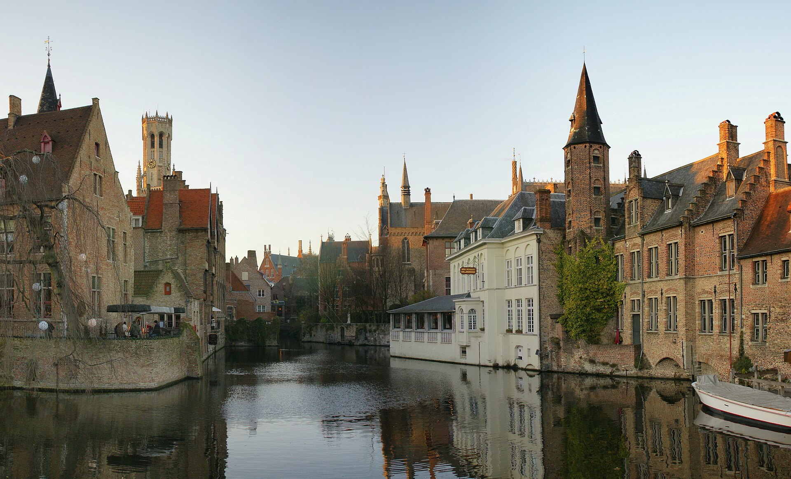
Source
Hans Hillewaert, Rozenhoedkaai Brugge, Wikimedia Commons. Licence : Creative Commons BY-SA 3.0.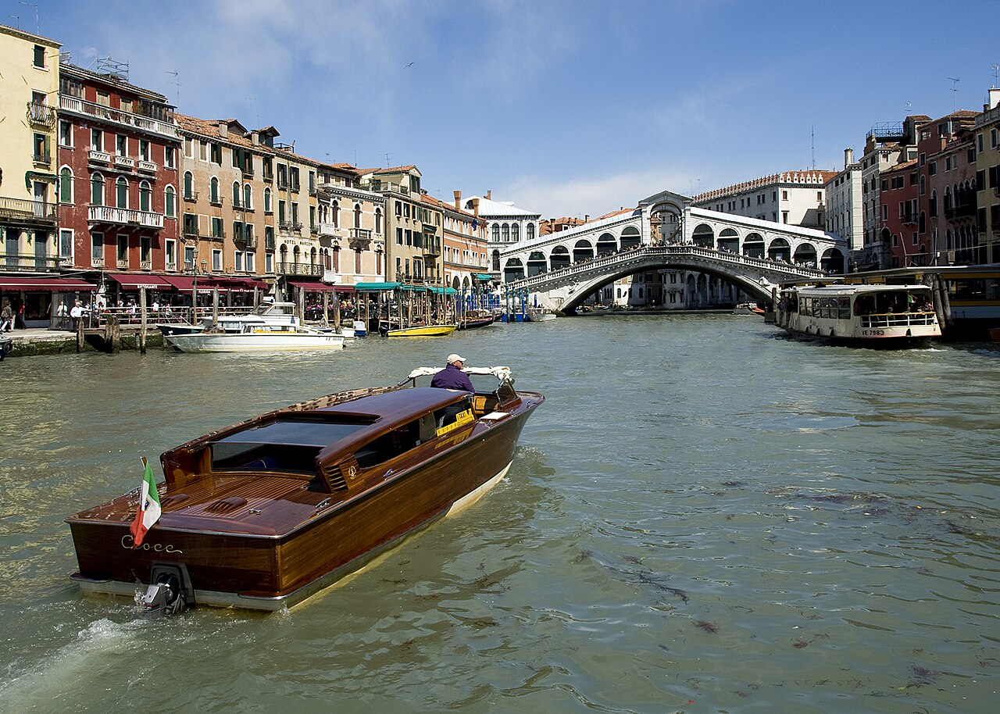
Source
Saffron Blaze, Rialto Bridge Grand Canal, Wikimedia Commons. Licence : Creative Commons BY-SA 3.0.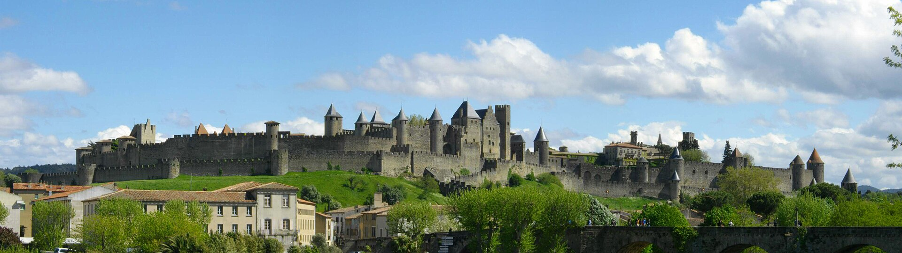
Source
Jondu11, Cité de Carcassonne, Wikimedia Commons. Licence : Creative Commons BY-SA 4.0.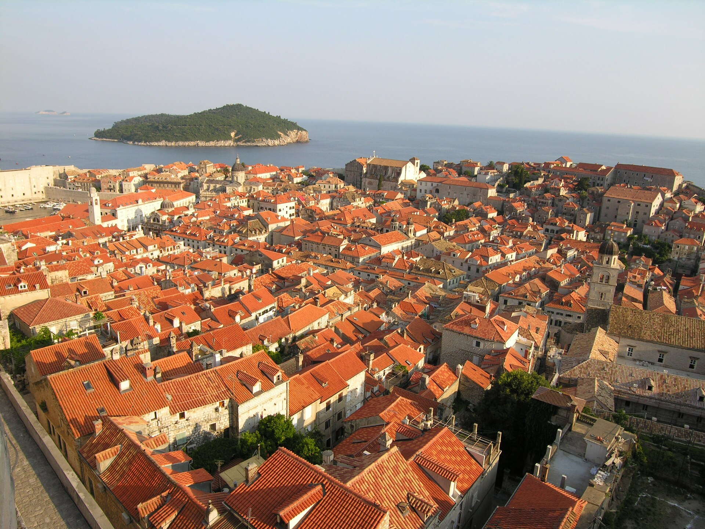
Source
Francesco Bandarin, Old City of Dubrovnik-108773, Wikimedia Commons. Licence : CC BY-SA 3.0 igo.Les problèmes urbains
Bien que les représentations iconographiques du Moyen Âge (peintures, gravures, tapisseries) dépeignent les rues des villes comme luisantes de propreté, la réalité était plus catastrophique. De nombreux écrits mentionnent la saleté des rues, ne serait-ce qu'en évoquant les toponymes (les noms qu'on leur donne) : rue Cave, Trou Punais, la Sale, Foireuse, Basse-Fesse, du Bourbier, etc. Un document de 1412 mentionne une place Marcadal (quartier fangeux) et des fossés nauséabonds à Lourdes.
Les rues sont polluées par les nuisances de chantiers, les ateliers débordent sur la chaussée, les habitants y jettent leurs seaux d'urine et d'excréments, certains défèquent dans la rue; les ouvroirs des particuliers et les eaux stagnantes des pluies créent des terreaux d'immondices. Circuler dans la rue représente un réel danger et une expérience désagréable, entre les boues, les eaux et les saletés qui envahissent la chaussée, et la circulation d'animaux (cochons, volailles, chevaux, chiens errants, etc.) et de marchands ambulants.
(Source : Wikipédia)
La hiérarchie sociale dans les bourgs
Il existe, dans les bourgs, différentes classes sociales. Du sommet à la base de la hiérarchie :
- la noblesse : le roi, les ducs et les duchesses, les comtes et les comtesses, les barons et les baronnes ainsi que les seigneurs;
- le clergé : l'archevêque, les évêques, les prêtres, les moines, les soeurs, etc.;
- la bourgeoisie marchande : les grands et les petits marchands, les banquiers, les membres de guildes, les maîtres artisans, etc. Cette classe sociale émerge durant le Bas Moyen Âge;
- le peuple : les petits artisans, les paysans, les commerçants, etc.;
- les esclaves, présents dans quelques bourgs seulement.
Le Grand commerce
Le développement des corporations
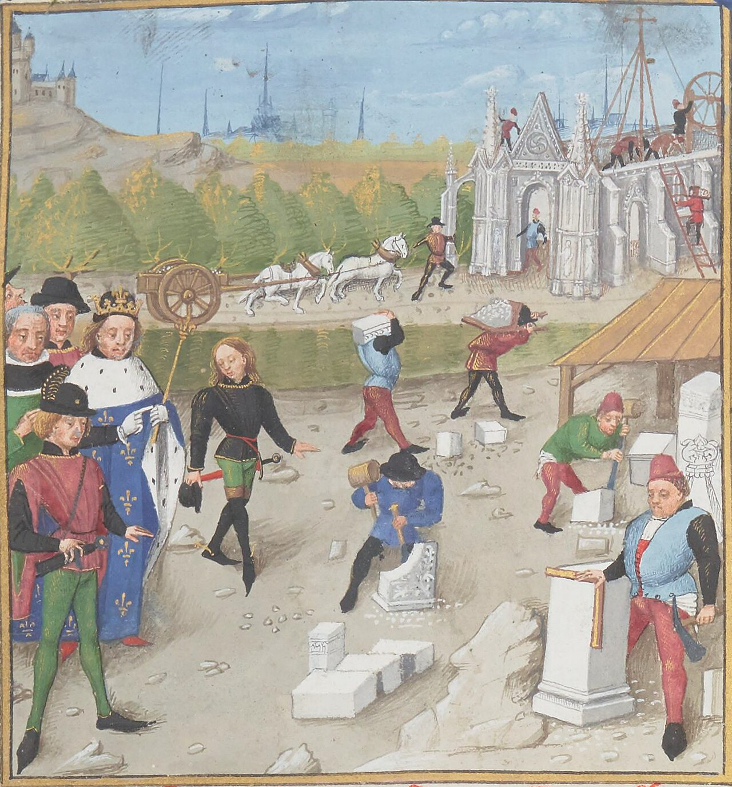
Source
Robinet Testard, Dagobert visitant le chantier de la construction de Saint-Denis, Wikimedia Commons. Licence : Domaine public.Dans les bourgs et villes du Moyen Âge, après l'an 1000, les artisans s'organisent sous forme d'associations professionnelles. Ces associations prennent, selon le lieu, le nom de guilde, de hanse ou de corporation. Ces associations organisent l'entraide et punissent ceux qui voudraient casser les prix ou dénaturer les pratiques professionnelles. Elles sont hiérarchisées, avec des maîtres, des compagnons et, à la base, des apprentis. On utilise encore ces termes dans certains métiers au Québec. Chaque corporation a pour mandat de standardiser la procédure et la durée de la formation nécessaire avant d'obtenir le titre d'artisan. Également, les corporations :
- fixent les prix des marchandises;
- assurent la protection de leurs membres;
- sécurisent le transport de caravanes avec des soldats qui protègent la marchandise sur les routes remplies de brigands.
Les artisans médiévaux
Le tisserand. Le tisserand est un artisan qui fabrique des tissus. Il utilise pour cela un métier à tisser ou parfois des aiguilles. Ses matières premières sont le coton, la laine, le lin, le chanvre et la soie. Une fois que le fil est créé, il passe au foulage : il se fait tremper, piétiner dans l'eau pour améliorer sa qualité puis étirer, sécher et enfin, on le tend. Les tisserands créent dans leurs ateliers des vêtements, des tapisseries et des draps. Beaucoup de tailleurs et de rois achètent leurs produits. Les tissus sont ensuite teintés chez un teinturier. Un tisserand doit commencer son travail après le lever du soleil sous peine d'une amende, et il devait aussi payer des taxes. (Source : Wikipédia)
Le maçon. Le maçon a pour charge essentielle de monter les murs, c'est-à-dire d'asseoir la pierre, de la poser, de la coucher et enfin de la cimenter. Mais dans les textes du Moyen Âge, la confusion n'est pas rare entre les termes désignant le maçon et le tailleur de pierre, car leurs tâches sont assez semblables et la polyvalence des bâtisseurs fréquente sur les chantiers. En revanche, le maçon dit « supérieur », qui sait tailler la pierre, est nettement différencié du « maçon de moindre importance » dont les compétences se limitent à la pose des pierres sur les chantiers. Parfois, les maçons les plus fortunés endossent le rôle d'entrepreneur et dirigent à forfait de petits chantiers. (Source : Bibliothèque nationale de France, 2015)
Le couvreur. En tant que corporation, le métier de couvreur apparaît assez tardivement. En effet, pendant l'Antiquité et le Moyen Âge, une bonne partie des toitures sont faites de planches de bois ou de bardeaux. Une partie du métier reste donc fortement liée à celui des charpentiers, tandis que l'autre partie, qui réalise des couvertures recouvertes de feuilles de plomb, se confond avec les « plombiers ». À partir du 13e siècle, on distingue, pour la première fois, les « couvreurs » (qui assurent les travaux neufs) des « recouvreurs » (qui réparent). Mais les couvreurs demeurent sous l'autorité du charpentier royal. Comme dans tous les métiers liés à la charpenterie, le nombre d'apprentis est limité à un seul et l'apprentissage dure six ans. (Source : Bibliothèque nationale de France, 2015)
L'organisation du Grand commerce
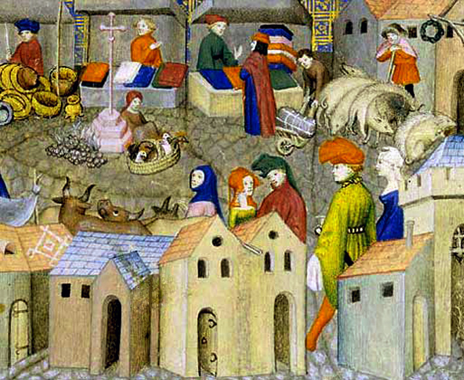
Source
Workshop of Master of the City of Ladies, Scène de foire - ca 1400 - BNF Fr12559 f167, Wikimedia Commons. Licence : Domaine public.Le Grand commerce, au Moyen Âge, est rendu possible grâce à plusieurs facteurs. Tout d'abord, les croisades ont permis le développement durable de routes commerciales entre l'Orient, l'Afrique et l'Europe. Le goût pour les produits de luxe (soieries, épices et pierres précieuses) ne s'en trouve que renforcé. Venise devient alors un pôle économique très important pour toute la région méditerranéenne. Son port devient l'un des plus importants en Europe. Le bourg de Danzig connaît un développement semblable, grâce à son emplacement stratégique, à proximité de la mer Baltique et de la mer du Nord. (Source : Alloprof)
Entre ces deux pôles commerciaux se développe un grand réseau de foires commerciales. Elles se tiennent à des endroits et à des dates fixés. Elles sont réglementées et organisées. Les marchands s'y rendent ainsi afin de vendre leurs différents produits. Les nobles profitent grandement des foires afin d'acquérir des produits luxueux issus des quatre coins du continent européen, mais aussi de l'Asie et de l'Afrique.
Les foires de Champagne étaient parmi les plus courues. Leur succès résulte de leur situation géographique, entre les Flandres et l'Italie au croisement de nombreuses routes et voies navigables, de la gestion éclairée des comtes de Champagne et de la sécurité particulière dont bénéficiaient les marchands, garantie par les comtes de Champagne eux-mêmes. (Source : Wikipédia)
Le changeur et la lettre de change
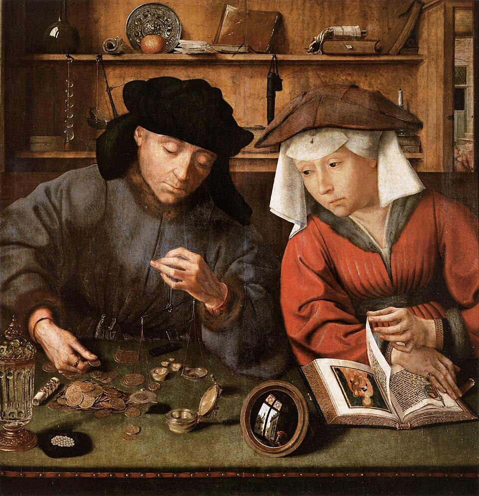
Source
Quinten Metsys, Quinten Massijs (I) - The Moneylender and his Wife - WGA14281, Wikimedia Commons. Licence : Domaine public.Le développement du Grand commerce à travers l'Europe au Moyen Âge crée un problème relativement important : celui des nombreuses monnaies. En effet, de nombreuses monnaies sont en circulation à travers l'Europe et celles-ci n'ont pas toutes la même valeur. Certains métiers, tels le changeur et le banquier, deviennent ainsi nécessaires pour faciliter le Grand commerce.
Qu'est-ce qu'un changeur? Un changeur est une personne qui effectue des opérations de change consistant en un échange de pièces de monnaie ou de devises d'un pays contre celles d'un autre. Ce commerce est généralement considéré comme l'origine de la banque moderne en Europe.
Qu'est-ce qu'une lettre de change? Un document écrit par une personne (le tireur) à une autre personne (le tiré) lui demandant de payer un montant d'argent déterminé à une troisième personne (le bénéficiaire). La lettre de change est, pour ainsi dire, l'ancêtre du chèque.
La peste noire
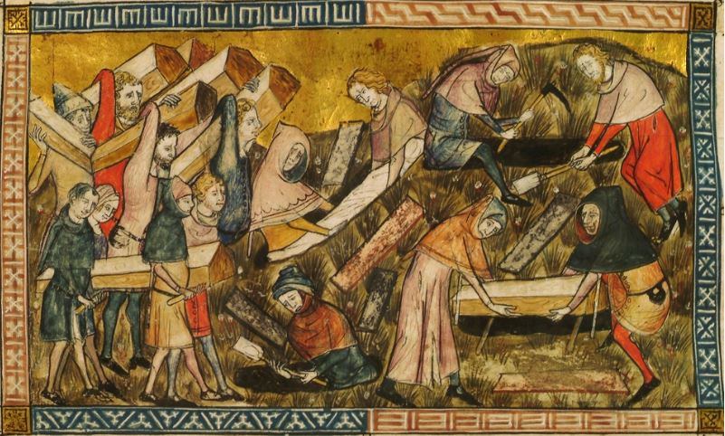
Source
Pierart dou Tielt (fl. 1340-1360), Doutielt3, Wikimedia Commons. Licence : Domaine public.De 1347 à 1352, la peste noire venue d'Asie a décimé près de la moitié de la population européenne. Des millions de personnes, des riches comme des pauvres, ont péri à la suite d'affreuses souffrances, de la Russie jusqu'à l'Afrique du Nord. L'épidémie, désastreuse à tous les points de vue, a bouleversé le portrait démographique et économique du continent.
Arrivée par les routes du commerce
La peste voyage sur les mêmes routes que les marchandises. Partie d'Asie centrale, elle suit les caravanes jusqu'aux ports de la mer Noire. En 1347, des navires marchands génois venus de Caffa accostent à Messine, en Sicile, avec des équipages déjà malades : en quelques mois, l'épidémie gagne les grands ports de la Méditerranée, puis remonte les routes commerciales vers l'intérieur du continent. Les mêmes réseaux qui enrichissent l'Europe transportent ainsi la maladie.
Une maladie foudroyante
La peste se transmet surtout par les puces des rats noirs, nombreux sur les navires et dans les villes. Le malade est pris de fièvre et voit apparaître des bubons, des ganglions enflés et douloureux; la mort survient souvent en quelques jours. Les bourgs, où l'on vit entassés dans des rues insalubres, sont frappés de plein fouet. Les médecins de l'époque, qui ignorent tout des microbes, sont impuissants : on accuse l'air corrompu, on fuit les villes, on cherche des coupables.
Les conséquences de l'épidémie
En cinq ans, l'Europe perd entre le tiers et la moitié de sa population, soit environ 25 millions de personnes. Les campagnes manquent alors de bras : les paysans survivants, devenus rares et précieux, obtiennent de meilleurs salaires et de meilleures conditions, ce qui affaiblit encore les obligations seigneuriales. Le commerce et les foires ralentissent un temps, puis l'économie se réorganise. La peste noire referme brutalement le Moyen Âge central et annonce les grands bouleversements de la fin du Moyen Âge.
Des applications pour t'exercer
Sources
- Service national du RÉCIT en univers social
- Alloprof, L'essor urbain et commercial
- Wikipédia
- Bibliothèque nationale de France, 2015
- Document de Jérôme Lebel